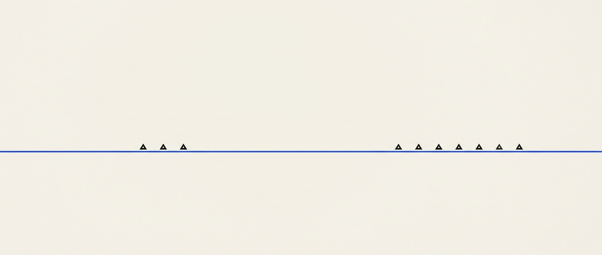
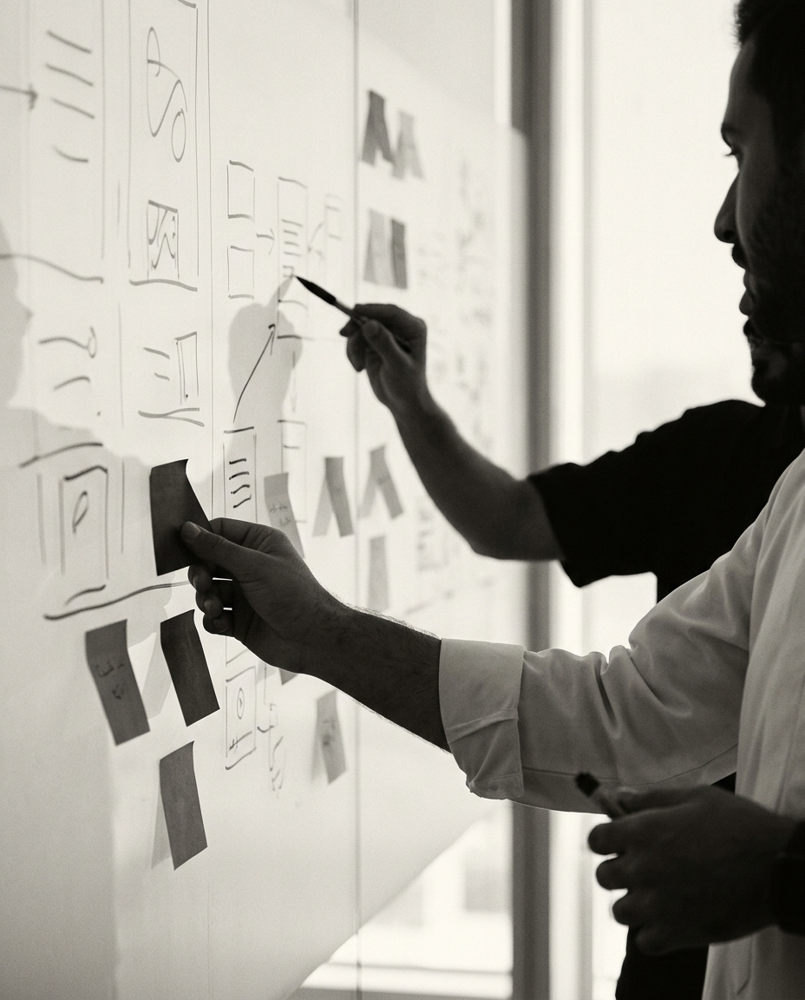
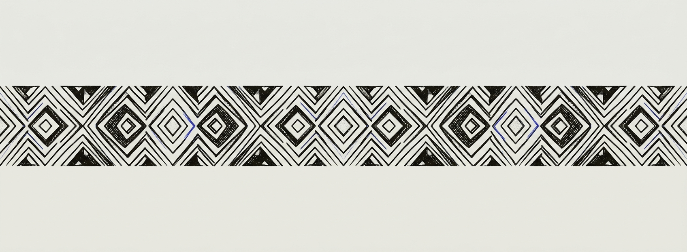

From a customer's need to a service that runs — designed in the Kingdom, built and operated, not handed over as a deck.
In 1998 Pine and Gilmore named the experience a distinct form of value; service-dominant logic reframed every product as a service. We work from that premise — translating a real job-to-be-done into a service blueprint, a blueprint into bounded contexts and API contracts, and contracts into orchestrated, self-healing workflows. One continuous line, discovery to operation, designed with intent.

We frame the unmet job-to-be-done before proposing anything. Discovery interviews and opportunity mapping turn signals and lived friction into a written, testable need.
We diverge to explore, then converge to commit — shaping a value proposition tied to the job and the outcomes the customer is trying to achieve.
We blueprint the service end to end — frontstage, backstage, and the line of visibility — then name reusable services with clear ownership.
We model bounded contexts, design API-first contracts, and align system and team boundaries — architecture that respects Conway's Law and is built to evolve.
We orchestrate the work — idempotent, observable, recoverable — and close the loop with automated support and feedback that improves the service over time.

Discover the job. We sit with the need until it's written plainly and validated — no solution before evidence.
Define & blueprint. Solution, service catalog, and system modelled as one continuous artifact.
Deliver API-first. Services shipped on a microservices spine — tested, contract-verified, observable.
Operate & learn. Orchestration, closed-loop support, and metrics so the experience sustains and improves itself.
